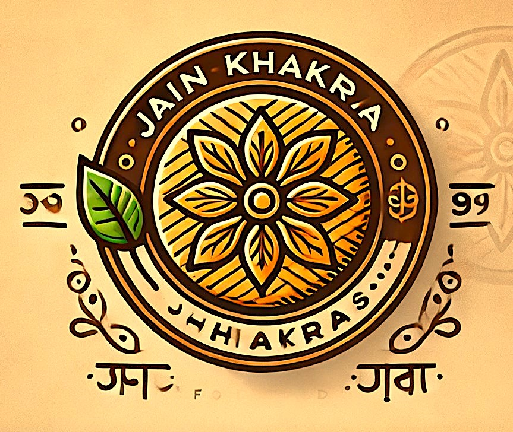

Premium Wheat Flour Khakra – Infused with the richness of pure Ghee
Discover the authentic taste of tradition with our Premium Wheat Flour Khakra, a delightful snack crafted with the finest wheat flour and enriched with pure ghee to
bring you an unmatched crispy texture and rich, buttery flavor. Inspired by the time-honored recipes of Indian kitchens, each khakra is meticulously hand-rolled and
slow-roasted to perfection, ensuring a thin, light, and golden-brown crunch that delivers both taste and nutrition in every bite.
Made with wholesome wheat flour, this khakra is packed with fiber and essential nutrients, making it a nourishing yet indulgent choice. The addition of pure ghee not
only enhances its flavor but also contributes to a satisfying mouthfeel, leaving a subtle, aromatic richness that lingers long after each bite. Unlike regular snacks
that are fried or loaded with artificial ingredients, our khakra is a healthier alternative, offering a delicious, guilt-free munching option that keeps you energized
throughout the day.
Whether you enjoy it as a morning breakfast companion with tea, a mid-day snack, or an evening treat, our khakra is versatile and pairs beautifully with a variety of
accompaniments—be it pickles, chutneys, yogurt, or even a light spread of butter for an extra indulgent twist. Its lightweight and non-messy nature also makes it an
ideal travel-friendly snack, perfect for carrying to work, school, or long journeys.
At the heart of our Premium Wheat Flour Khakra lies a commitment to quality and freshness. Free from artificial preservatives, colors, or additives, every batch is
carefully packed to retain its crunch and authentic flavors. Whether you're a fan of traditional snacks or simply looking for a healthier alternative to satisfy your
cravings, this khakra is a perfect blend of taste, texture, and nutrition. Experience the goodness of home-style cooking in every bite—crispy, wholesome, and
irresistibly delicious!
